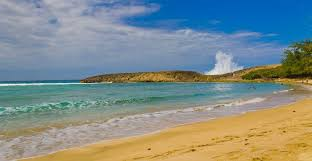
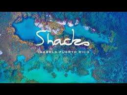
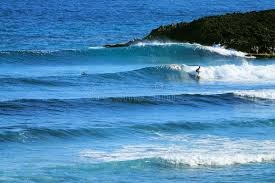
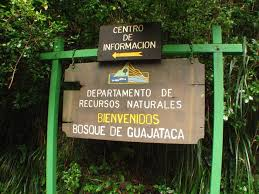
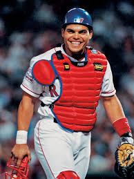
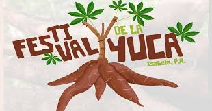

Video sugerido sobre Isabela

Puedes abrir una búsqueda de videos sobre Isabela y escoger el que mejor represente el pueblo al momento de presentar tu proyecto.
Buscar videosEl Jardín del Noroeste
Playas, historia, cultura y naturaleza en la costa noroeste.
En esta sección se presentan recursos multimedia relacionados con el municipio de Isabela. A través de imágenes, es posible apreciar su belleza natural, su cultura y los principales atractivos turísticos de la región.

Puedes abrir una búsqueda de videos sobre Isabela y escoger el que mejor represente el pueblo al momento de presentar tu proyecto.
Buscar videos
El snorkeling es una actividad popular en Isabela gracias a sus aguas cristalinas y su diversidad marina. En la playa Shacks los visitantes pueden explorar el ecosistema costero, observar peces tropicales y disfrutar de la belleza natural del océano.

La Playa Jobos es uno de los destinos más populares para practicar surfing en Isabela. Sus olas consistentes atraen tanto a surfistas locales como visitantes, convirtiéndola en un punto clave para este deporte en la costa noroeste de Puerto Rico.

El Bosque Estatal de Guajataca es una reserva natural ubicada en la región noroeste de Puerto Rico, en Isabela. Este bosque se caracteriza por su abundante vegetación, senderos naturales y paisajes ideales para caminatas, exploración y contacto con la naturaleza.

Isabela ha sido cuna de figuras importantes en el ámbito deportivo y cultural. Uno de los más reconocidos es Iván “Pudge” Rodríguez, miembro del Salón de la Fama del Béisbol. Su legado representa el talento, la disciplina y el orgullo del pueblo isabelino.

Isabela celebra actividades culturales y eventos comunitarios que reflejan las tradiciones del pueblo y fortalecen su identidad cultural. Como el Festival de la Yuca. se celebrará el 18 y 19 de octubre de 2025 en la Plaza de Recreo, ofreciendo música en vivo, artesanías y gastronomía basada en este tubérculo. El evento destaca por sus platos típicos, como sorullos, rellenos y empanadillas de yuca, celebrando la tradición local y agrícola